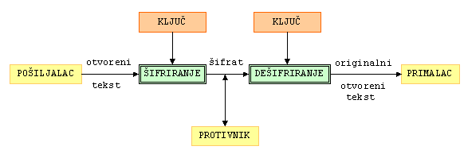

G,
H = { gi : i
G,
H = { gi : i
 0 }
podgrupa od G generirana s g,
te h H.
Treba naći najmanji nenegativni cijeli broj x takav da je
0 }
podgrupa od G generirana s g,
te h H.
Treba naći najmanji nenegativni cijeli broj x takav da je
h = gx,
gdje je gx = g * g * ... * g (x puta). Taj broj x se zove diskretni logaritam i označava se s logg h.Kriptografija (ili tajnopis) je znanstvena disciplina koja se bavi proučavanjem metoda za slanje poruka u takvom obliku da ih samo onaj kome su namjenjene može pročitati.
Osnovni zadatak kriptografije je omogućavanje dvjema osobama (zvat ćemo ih pošiljalac i primalac) da komuniciraju preko nesigurnog komunikacijskog kanala na način da treća osoba (njihov protivnik) ne može razumjeti njihove poruke. Poruku koju pošiljalac želi poslati primaocu zovemo otvoreni tekst. Pošiljalac transformira otvoreni tekst koristeći unaprijed dogovoreni ključ K. Taj postupak se zove šifriranje, a dobiveni rezultat šifrat. Nakon toga pošiljalac pošalje šifrat preko nekog komunikacijskog kanala. Protivnik prisluškujući može doznati sadržaj šifrata, ali ne može odrediti otvoreni tekst. Za razliku od njega, primalac koji zna ključ kojim je šifrirana poruka može dešifrirati šifrat i odrediti otvoreni tekst. Spomenimo da su u kriptografskoj literaturi standardna imena za pošiljatelja - Alice, primaoca - Bob, te protivnika - Eve.

Ova shema opisuje tzv. simetrični ili konvencionalni kriptosustav. Funkcije koje se koriste za šifriranje eK i dešifriranje dK ovise o ključu K kojeg Alice i Bob moraju tajno razmjeniti prije same komunikacije. Kako njima nije dostupan siguran komunikacijski kanal, ovo može biti veliki problem.
Godine 1976. Whitfield Diffie i
Martin Hellman
su ponudili jedno moguće rješenje problema razmjene ključeva,
zasnovano na činjenici da je u nekim matematičkim strukturama
(grupama) potenciranje puno jednostavnije od logaritmiranja.
Neka je G konačna abelova grupa. Da bi bila prikladna za primjene u kriptografiji, grupa G bi trebala imati svojstvo da su operacije množenja i potenciranja u njoj jednostavne, dok je logaritmiranje (inverzna operacija od potenciranja) vrlo teško. Također bi trebalo biti moguće generirati slučajne elemente grupe na gotovo uniforman način. Ipak, centralno pitanje jest koliko je težak tzv. problem diskretnog logaritma u grupi G.
|
Problem diskretnog logaritma: Neka je
(G, *) konačna grupa,
g G,
H = { gi : i
0 }
podgrupa od G generirana s g,
te h H.
Treba naći najmanji nenegativni cijeli broj x takav da je
h = gx, gdje je gx = g * g * ... * g (x puta). Taj broj x se zove diskretni logaritam i označava se s logg h. |
Alice i Bob se žele dogovoriti o jednom tajnom slučajnom elementu u grupi G, kojeg bi onda poslije mogli koristi kao ključ za šifriranje u nekom simetričnom kriptosustavu (npr. DES-u ili AES-u). Oni taj svoj dogovor moraju provesti preko nekog nesigurnog komunikacijskog kanala, bez da su prethodno razmjenili bilo kakvu informaciju. Jedina informacija koju imaju jest grupa G i njezin generator g (pretpostavimo da je grupa G ciklička).
Slijedi opis Diffie-Hellmanovog protokola. Sa |G| ćemo označiti broj elemenata u grupi G.
Diffie-Hellmanov protokol za razmjenu ključeva:
|
Njihov protivnik (Eve) koji može prisluškivati njihovu komunikaciju preko nesigurnog komunikacijskog kanala zna sljedeće podatke: G, g, ga, gb. Eve treba iz ovih podataka izračunati gab (kaže se da treba riješiti Diffie-Hellmanov problem (DHP)). Ako Eve iz poznavanja g i ga može izračunati a (tj. ako može riješiti problem diskretnog logaritma (DLP)), onda i ona može pomoću a i gb izračunati gab. Vjeruje se da su za većinu grupa koje se koriste u kriptografiji ova dva problema, DHP i DLP, ekvivalentni (tj. da postoje polinomijalni algoritmi koji svode jedan problem na drugi).
U originalnoj definiciji Diffie-Hellmanovog protokola za grupu
G se uzima multiplikativna grupa

 *
svih ne-nul ostataka modulo p, gdje je p
dovoljno velik prost broj. Poznato je da je grupa
*
ciklička. Generator ove grupe se naziva primitivni korijen
modulo p. Broj g
{1, 2, ... , p - 1} je primitivni korijen modulo p
ako je gp -1 najmanja potencija broja
g koja daje ostatak 1 pri djeljenju s p.
*
svih ne-nul ostataka modulo p, gdje je p
dovoljno velik prost broj. Poznato je da je grupa
*
ciklička. Generator ove grupe se naziva primitivni korijen
modulo p. Broj g
{1, 2, ... , p - 1} je primitivni korijen modulo p
ako je gp -1 najmanja potencija broja
g koja daje ostatak 1 pri djeljenju s p.
Npr. broj 2 je jedan primitivni korijen modulo 11. Zaista, potencije
broja 2 daju redom ostatke 1, 2, 4, 8, 5, 10, 9, 7, 3, 6
pri djeljenju s 11. Brojevi 6, 7 i 8 su također primitivni
korijeni modulo 11. Općenito, broj primitivnih korijena
modulo p jednak je
 (p - 1),
tj. broju brojeva u nizu 1, 2, ... , p - 1 koji su
relativno prosti s p - 1.
(p - 1),
tj. broju brojeva u nizu 1, 2, ... , p - 1 koji su
relativno prosti s p - 1.
*,
p = 2147483659, te
g = 2, a = 1234, b = 4321.
Odredite ključ K = gab.
| Web stranica seminara | Andrej Dujella - osobna stranica |